引言
曾想过开发一款自己的电子游戏吗? 来对地方了. 本系列教程就是教你如何开发一个属于自己的2D休闲游戏.
本教程是第一章 的延续, 是针对任何水平的指南. 在这一章我们将会做一个"打鸟"类型的游戏.
这个游戏起名为"Langaw", 翻译过来就是"小飞蝇". 玩家的任务就是在小飞蝇到达垃圾堆前尽可能的多消灭小飞蝇(阿航在这里不得不吐槽下原作者, 我们为啥要保护垃圾啊真是的😒).
玩家只需要在屏幕上简单的点击就可实现击杀的效果(别用榔头砸手机🤣).这一章中, 我们暂时不会渲染图片, 所以暂时将小飞蝇展示为绿色方块, 当击中小飞蝇后, 变为红色方块并坠落至屏幕底部.
你可以在文章底部查看效果视频.
下面是我们本系列教程的文章目录:
- Flutter 游戏开发(flame) Flame介绍
- Flutter 游戏开发(flame) 01 开发2D休闲游戏：消灭小飞蝇(1/5) 本章
- Flutter 游戏开发(flame) 02 图形和动画(2/5)
- Flutter 游戏开发(flame) 03 界面和弹窗(3/5)
- Flutter 游戏开发(flame) 04 分数, 存档和音效(4/5)
- Flutter 游戏开发(flame) 05 收尾和打包(5/5)
需具备的条件
如果你完整的学习了第一章 , 那么你应该已经准备好进行开发了🤩.
以防万一, 在这里重复一下:
本文将假设您已是一名有一定经验的开发人员, 且拥有了”程序员思维”. 如果你是小白, 没关系! 本篇教程非常入门. 只要兴趣足够, 你也将成为一名”游戏开发者”✌✌.
你也需要一个配置足够的电脑, 可以运行IDE、编译并运行Android模拟器. 如果你的电脑配置不够高, 你也可以直接连接Android手机, 在真机上运行和调试.
Flutter可以同时构建Android和IOS APP. 本文将围绕Android进行开发. 开发完成后, 你可以运行不同的build, 使你也可以在IOS上玩游戏.
要顺利阅读本文, 假定您已经具备以下条件👇:
- IDE (Android Studio 或者 Microsoft Visual Studio), 以及其所需的Flutter和dart插件
- Android SDK. 这是开发Android应用的必备条件.
- Flutter SDK. 本篇将使用Flutter以及Flame进行游戏开发. 请阅读Flutter官方文档 , 完成圈内的教程:

开始
我们先来规范一些事项, 使本文更容易理解😉. 首先, 我不会赘述第一章 讨论的概念、步骤以及代码. 我会详细的解释, 但不会偏离我们要制作游戏的目标. 话虽如此, 还请您仔细阅读一下第一章 🙏!
文件目录将会使用相对路径表示.
Linux中, 比如你项目的目录为/home/awesomegamedev/project.
那么./lib/main.dart就代表了/home/awesomegamedev/project/lib/main.dart.
Windows同理, 比如你的项目目录为D:\Projects\SampleGame.
那么./lib/main.dart就代表了D:\Projects\SampleGame\lib\main.dart
本篇教程使用了Flutter 1.14.6 beta版本以及Dart 2.8.0-dev.5.0. 现在相较于之前的版本, @overide以及new关键字是非必选的, 为了代码的简洁, 文章中也不会出现这些.
创建一个Flame/Flutter游戏
上面讲过, 我们的游戏名称将被称为Langaw. 当然你也可以使用自己想用的名字, 别忘了后面替换掉所有langaw为你自己的.
创建项目, 清理代码
你可以使用IDE自动创建项目, 也可以使用命令行:
flutter create langaw
创建完成后, 使用IDE打开项目目录.
与第一章
类似, 进行清理代码. 我们不会执行测试. 所以删除./test目录.

(删除test目录)
然后, 清空main.dart为:
import 'package:flutter/material.dart';
void main() {}

(清空main代码截图)
导入Flame插件, 初始化游戏
导入Flame插件
进入./pubspec.yaml, 在cupertino_icons: ^0.1.2后面导入:
flame: ^0.18.1

(导入Flame插件)
🟢进行 packages get
初始化游戏
此时我们需要进行锁定横屏以及全屏显示.
可以直接调用Flame的Util库实现此效果, 导入:
import 'package:flame/util.dart';
import 'package:flutter/services.dart';
为main函数添加async关键字, 并在函数内添加:
Util flameUtil = Util();
await flameUtil.fullScreen();
await flameUtil.setOrientation(DeviceOrientation.portraitUp);
紧接着在main的首行添加:
WidgetsFlutterBinding.ensureInitialized();
🔴 某些版本不加此行运行会报错
Unhandled Exception: ServicesBinding.defaultBinaryMessenger was accessed before the binding was initialized.

(main.dart代码截图)
运行项目, 如果你的屏幕和截图一致, 是白色且控制台没有任何错误出现就没问题:
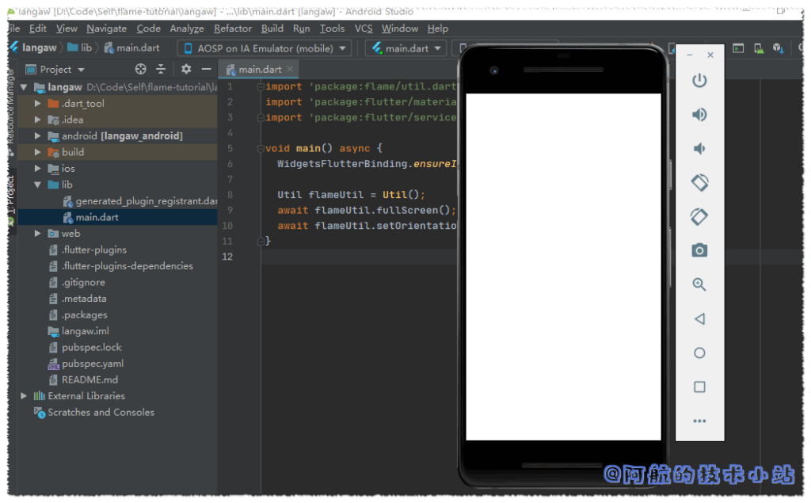
(运行效果)
创建Game类, 设置Game loop
我们需要一个game类, 提供了game loop的逻辑.
game loop是一个游戏的核心. 它控制了所有除玩家输入的逻辑.
创建Game类并链接
创建Game类
创建文件./lib/langaw-game.dart:
import 'dart:ui';
import 'package:flame/game.dart';
class LangawGame extends Game {
Size screenSize;
void render(Canvas canvas) {}
void update(double t) {}
void resize(Size size) {}
}
💡 解析: 因为需要访问
Canvas和Size类, 所以导入了dart:ui. 我们同样需要Flame库. 我们创建一个类, 继承Game. 此类有3个函数, 重写它们. 还有一个名为screenSize的实例变量, 用于存储屏幕尺寸.
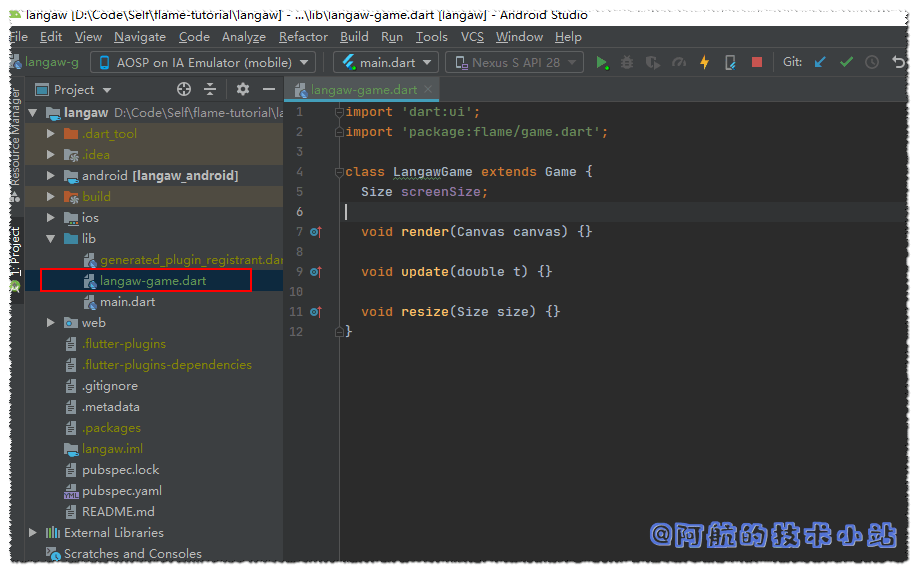
(langaw-game代码截图)
链接并运行Game类
现在将Game类链接到main函数, 当游戏运行时, 将会创建LangawGame的一个实例.
回到./lib/main.dart, 导入:
import 'package:langaw/langaw-game.dart';
创建game类的实例, 并通过runApp进行调用, 入参为LangawGame的widget属性:
LangawGame game = LangawGame();
runApp(game.widget);
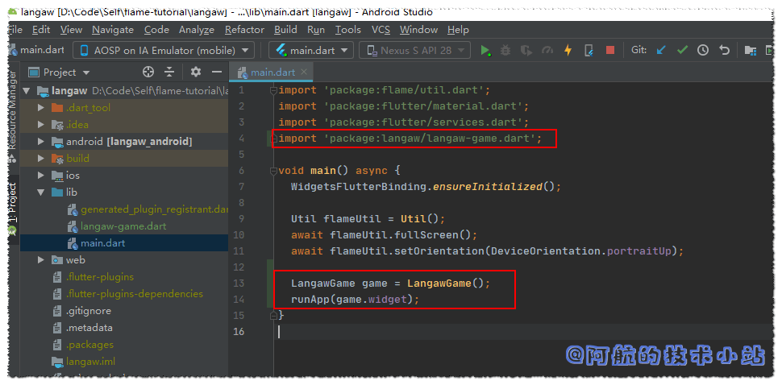
(代码截图: 链接并运行Game类)
处理屏幕尺寸, 绘制背景
处理屏幕尺寸
回到我们的游戏类./lib/langaw-game.dart, 我们确定屏幕的尺寸后进行绘制(以及后面的对象移动).
某些事件将会导致Flutter重新计算Canvas的尺寸. 当运行游戏时, 会出现一次这样的事件, 其他情况比如旋转手机, 将会使宽度和高度交换. 我们的游戏只支持纵向, 所以不必担心这一点.
某些手机支持多种分辨率, 玩家可以在玩游戏时变更. 我们来处理一下, 确保每次Flutter通知Canvas大小变更时, 我们进行重新计算.
在resize()中添加:
screenSize = size;
💡 解析: 这样做会将Flutter传递的大小传入实例变量
screenSize中, 以便我们在game loop的其他部分访问它.
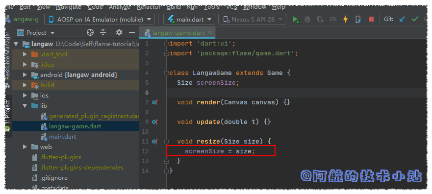
(代码截图: 处理屏幕尺寸)
绘制背景
为了使背景不那么单调, 所以不用黑色和白色. 我们将使用**FlatUIColors.com
网站上Canadian palette
的Fuel Town** (#576574) 颜色. 当然, 你也可以使用任何喜欢的颜色. 背景颜色不宜太过刺眼, (比如红色#ff0000).
在render()中添加:
Rect bgRect = Rect.fromLTWH(0, 0, screenSize.width, screenSize.height);
Paint bgPaint = Paint();
bgPaint.color = Color(0xff576574);
canvas.drawRect(bgRect, bgPaint);
💡 解析: 创建一个与屏幕相等尺寸的矩形, 然后为其分配颜色. 然后使用
canvas的drawRect函数在画布上绘制这个句型.bgRect用于调整大小,bgPaint用于提供颜色.
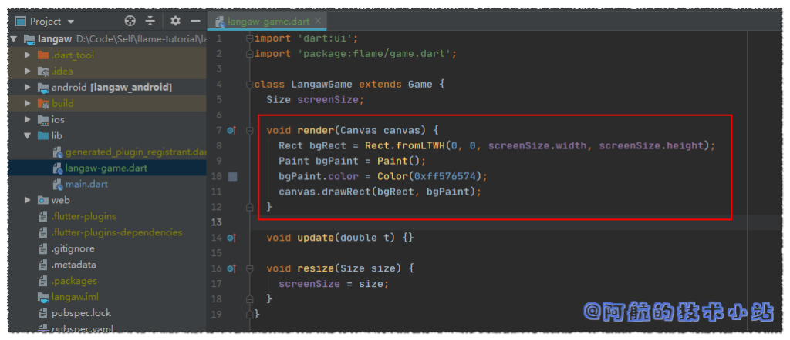
(代码截图: 绘制背景)
运行项目查看模拟器, 应该会看到类似内容:
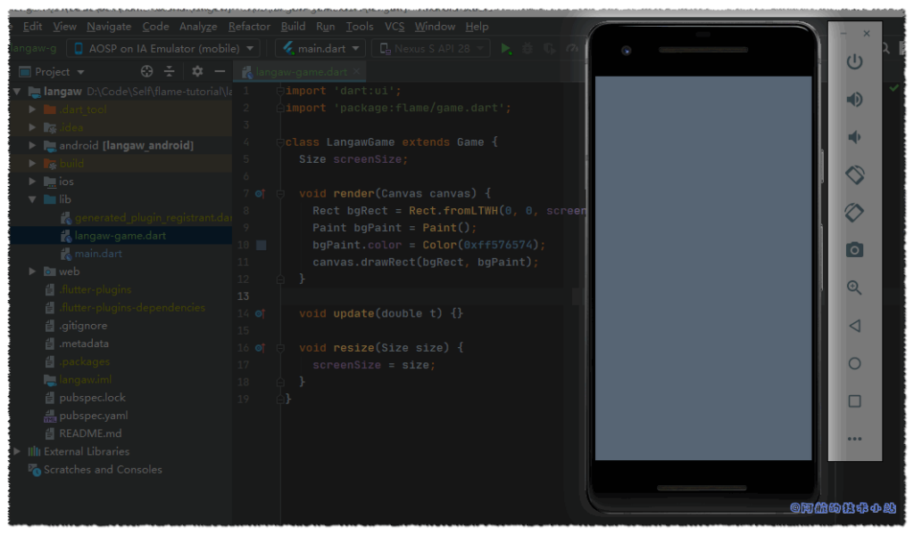
(运行模拟器截图)
手机屏幕兼容性, 编写区块系统
手机屏幕兼容性
创建第一个游戏component前, 我们首先来讨论一个重点:
手机尺寸.
根据Quartz 的帖子, 直至2015年, 共有24000种不同的安卓设备. 现在2020年了(此文章发布前), 这个数字应该更夸张了.
我们的游戏可能不会被所有人下载使用, 却可能会涉及到很多的型号. 就算没有涉及全部的型号, 也会涉及若干分辨率以及纵横比.
纵横比是设备的宽高之间的比例. 纵横比在你旋转屏幕时是可切换的.
有几种屏幕比例3:2, 4:3, 8:5, 5:3, 16:9. 长一点的甚至达到了18.5:9. 最常见的尺寸是16:9.
因为我们的游戏是纵向的, 我们宽度固定为9., 所以我们的纵横比设定为9:x.
这样我们只需要考虑手机的宽度. 它被平均分为九个区块. 手机越高, 小飞蝇飞来飞去的空间就越多.
更重要的是, 无论玩家的手机大小和纵横比是多少, 小飞蝇的尺寸总是相同的. 并排放置, 需要9只小飞蝇来填充屏幕的整个宽度.
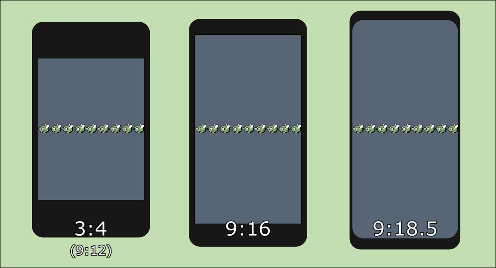
编写区块系统
为了能有一个可重用的区块尺寸, 我们需要在game类中添加一个实例变量. 在screenSize下方添加代码:
double tileSize;
💡 这个实例变量等于屏幕宽度除以9. 它是一个实例变量, 因此我们可以从game类的任意位置(和后面用到的子
component)访问它.
把它存储为实例变量的另一个原因是它保存上次计算时的值. 我们不需要每次都从屏幕宽度来计算区块尺寸. 当屏幕尺寸变更时, 我们再来计算它的值. 因此, 在保存屏幕尺寸下面添加:
tileSize = screenSize.width / 9;

(代码截图: 编写区块系统)
创建小飞蝇Component(组件)
什么是Component(组件)?
Component(或称为对象或者游戏对象), 是在游戏中做了某些事情的对象. 比如玩家控制的角色、敌人、陆地或地形、地图、部分UI, 子弹等等. 某些Component通常和sprite(精灵, 又称图形)有关联. 比如, 用于表示敌人的Component利用它的位置在屏幕上绘制图形让玩家感知到.
并非所有的component都用于位置和绘图. 某些component没有位置的概念, 并且不会再屏幕上绘制sprite, 仅用于某些其他的功能. 这类component被称为controller(控制器). controller控制游戏的某些状态, 却不会在屏幕上直接展示出来.
比如敌人的"生成器". 实际上, controller只是在某个地方等待时间点生成敌人component. 时间一到, controller控制一个敌方component并将其提交给game loop. game loop拿到这个敌方component, 进行相应的update和render.
为什么要使用Component
上一章 讲过, game loop是游戏的核心. 没有game loop就没有游戏. 那么, component呢?
回想下你玩过的大型游戏, 有好多的事件会同时发生. 想象一下, 若所有的内容都存放在同一个文件中, 那么game类(./lib/langaw-game.dart)将会有多乱. 我们将会有几千行代码, 如果这么写将相当不利于维护.
还有, 使用component同样遵循了面向对象. 因此, 我们只需要专注于当前编写的对象. 这也是class的用途.
将component视为"迷你的game loop"或者游戏循环的子类. 更佳的解释: game loop的组件. 它们也有相应的render和update函数.
回到正题, 我们实际的创建一个component.
首个component
我们需要一个新的目录, 用于存储我们的component.
在./lib下, 创建目录components. 在下面创建fly.dart.
打开./lib/components/fly.dart, 编写:
import 'dart:ui';
class Fly {
void render(Canvas c) {}
void update(double t) {}
}
💡 解析: 首先我们导入
dart:ui使我们可以访问Canvas类. 就像main一样. 然后我们声明class,Fly和两个函数update()和render()
和game loop很相似, 对吗?
这是因为当这个component进行update和render时, game loop将调用这些函数.
位置和尺寸
fly component需要记录它的位置和储存. 因此让我们为其创建实例变量.
我们可以这么做: 分别定义double x;, double y;, double width;, 和 double height用于记录位置. 但这整整4个变量呢, 肯定有更好的方案.
还记得我们绘制背景时使用的Rect吗? 当构造实例时(通过fromLTWH工厂), 可以定义它的左(x), 上(y), 宽和高.
唯一的缺点是Rect实例是不可变的. 所以我们无法直接改变它的任何属性. 没关系, 我们可以使用Rect的shift和translate函数来改变矩形.
我们来添加实例变量flyRect.
💡 记住: 实例变量定义在class内部, 在定义class的下一行添加
Rect flyRect;
然后我们需要引用game类, 以便访问如screenSize一类的属性. 先导入:
import 'package:langaw/langaw-game.dart';
接下来, 我们添加另一个实例变量, 该变量将与父game loop连接. 在定义flyRect上方添加:
final LangawGame game;
💡
final关键字修饰的变量是不可变的. 因为fly只会存在于一个game类中, 所以我们不需要父game是动态的.
最后, 我们需要初始化这些实例变量. 我们需要为这个class添加一个构造函数.
**构造函数是在创建类实例时运行的函数.**它只运行一次, 因此最好用于初始化某些东西. 在声明实例变量的正下方编写以下代码块:
Fly(this.game, double x, double y) {
flyRect = Rect.fromLTWH(x, y, game.tileSize, game.tileSize);
}
💡 解析: 在这里, 我们使用类名作为函数的名称.
此构造函数接收3个参数, 第一个参数(this.game) 将会把入参传递给本身的属性. 后面的两个变量 (x 和 y)用于初始化坐标.
在构造函数体内, 我们为flyRect赋值一个新的矩形, 并用x和y分别作为左和顶部, game.tileSize作为宽和高. 目前, 我们的小飞蝇仅仅是一个正方形.
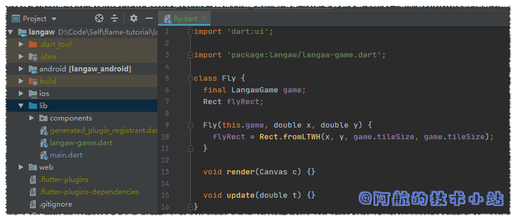
(代码截图: fly.dart)
绘制小飞蝇(正方形)
我们开始绘制小飞蝇, 将其加入至游戏实例中并在屏幕上显示.
我们知道绘制矩形需要一个矩形(上面写完了)和Paint对象. 为了防止Paint在render()中被重新初始化, 让我们将其存储在实例变量中.
在flyRect下方定义:
Paint flyPaint;
然后, 在构造函数中初始化flyPaint(在初始化flyRect下方). 再次从FlatUIColors.com
选择颜色(#6ab04c来自Aussie palette
).
flyPaint = Paint();
flyPaint.color = Color(0xff6ab04c);
现在, 我们准备好渲染了, 在render()中添加:
c.drawRect(flyRect, flyPaint);
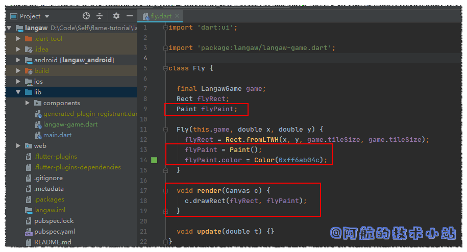
(代码截图: fly矩形及渲染)
生成小飞蝇
在随心所欲的召唤小飞蝇前, 我们先来讨论一些技术难点以及解决方案🤩. 当我们运行游戏时, 它不知道屏幕的尺寸, 游戏会认为它在0×0的屏幕上运行. 这也是为什么我们通过resize来让游戏指定屏幕的大小.
回到./lib/langaw-game.dart, 你将看到render函数运行时, 已经定义好了screenSize. 函数的调用顺序:
- 类实例已被创建(运行构造函数, 但是由于我们没有定义所以跳过).
- Flutter调用我们的resize函数, 并且为screenSize赋值.
- Game loop(游戏循环): 开始.
- Game loop: 调用update()
- Game loop: 调用render()
- Game loop: 结束. 回到第3步
各有利弊, 并且有一个"丑代码🙊". 理想情况下, 我们希望初始化代码位于内部或者从构造函数运行. 初始化代码是我们准备和创建对象的地方, 应仅执行一次.
丑代码🙊: 我们可以用这种方式解决问题: 仍然用resize作为初始化代码, 声明一个boolean变量, 命名为isInitialized, 默认false. resize函数中, 检查isInitialized是否为false, 如果是, 运行初始化代码并将isInitialized变为true
很明显, 上述的方法很low. 别担心, Flame提供了实用的解决方案✌✌✌!
等待size后进行初始化
打开./lib/langaw-game.dart, 在LangawGame类中定义名为initialize的构造函数.
构造函数中只包含一行: 调用initialize(), 使用异步函数等待屏幕Size.
因为Dart不支持构造函数中使用异步, 所以通过这种方式"曲线救国".
class内, 声明实例变量下方添加:
LangawGame() {
initialize();
}
void initialize() async {}
接下来, 我们需要调用Flame工具类中的initialDimensions函数, 所以需要导入flame:
import 'package:flame/flame.dart';
在initialize()中添加:
resize(await Flame.util.initialDimensions());
💡 解析: 如果你是新手, 这行可能比较难理解. 和数学类似, 表达式从内到外进行计算.
我们的resize()接收Size类型的函数. Flame的util的initialDimensions函数返回Future<Size>, 所以我们需要进行await, 等待Future完成后给我们返回Size.
screenSize直接赋值, 但是必须重新计算tileSize😕. 另外, 我们后面还要其他需要计算的东西, 所以最好将其封装在resize()中, 我们只需调用它进行重新计算所有内容😜.
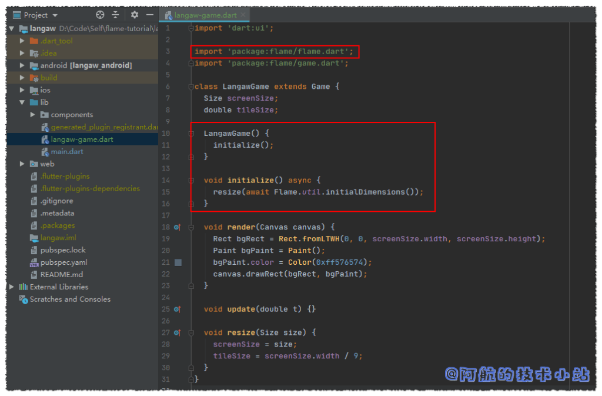
(代码截图: langaw-game.dart)
准备小飞蝇
还记得**Controller(控制器)**吗? 不需要渲染和指定位置的Component. 我们的教程中, 生成小飞蝇的逻辑相当简单. 所以我们不需要单独创建一个component. 我们的生成控制器之间嵌入至game类中.
为了使game类能访问和创建类的实例, 我们首先进行导入:
import 'package:langaw/components/fly.dart';
在Dart中没有array类型, 但是我们有List类型, 和array几乎一样甚至更强. 添加一个实例变量命名为flies:
List flies;
现在flies的值为null. 所以在initialize()中对其进行初始化:
flies = List();
看看当前的代码截图吧:
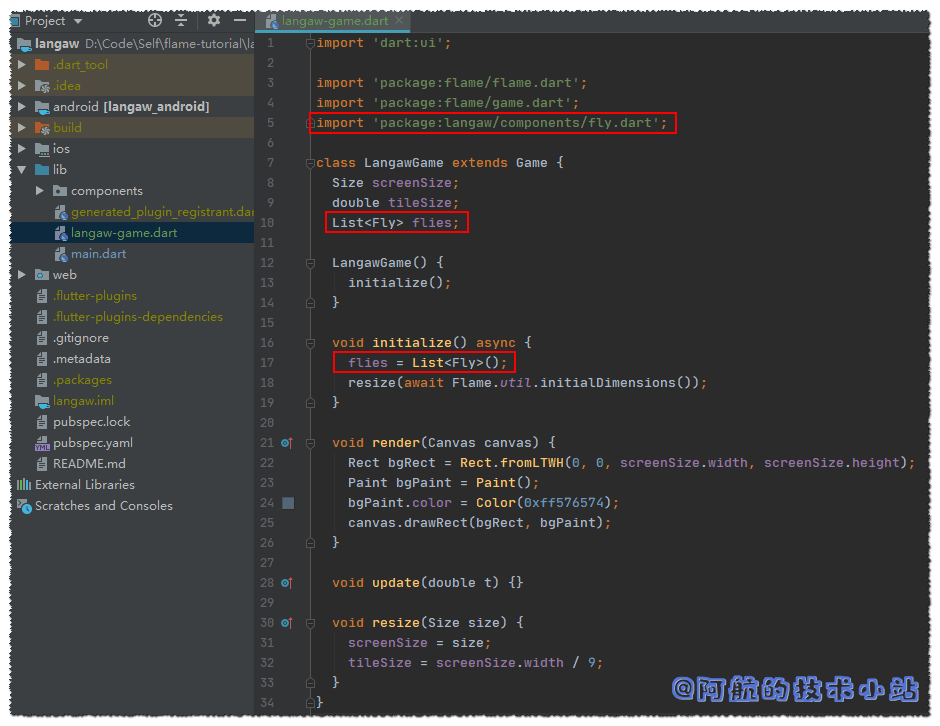
(代码截图: langaw-game.dart)
即使我们现在没有小飞蝇, 我们也先要保证有了之后能够被render()和update().
这也是为什么我们需要尽早初始化flies变量的原因, 若files为null, 我们就无法进行forEach(遍历).
记住, 调用render的顺序直接影响在游戏上的外观. “小飞蝇"间的顺序没什么要求, 但是"小飞蝇"们一定要在背景之后绘制. 在render()中添加:
flies.forEach((Fly fly) => fly.render(canvas));
update()中添加:
flies.forEach((Fly fly) => fly.update(t));
💡 解析: 上面的两个
flies.forEach会循环files中的每个fly, 并且进行操作. 箭头函数是Dart的语法.
最终, 代码截图:
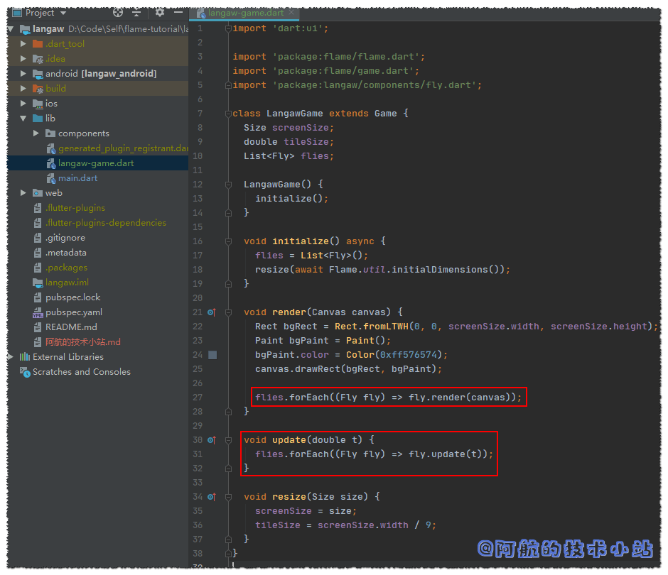
(代码截图: langaw-game)
召唤小飞蝇
因为我们的游戏会周期性的生成小飞蝇, 所以我们来定义一个可重用的、 生成小飞蝇的函数: spawnFly()
在./lib/langaw-game.dart中添加函数:
void spawnFly() {
flies.add(Fly(this, 50, 50));
}
💡 解析: 在
flies.add()内部, 我们创建类的新实例. 你可能记得,Fly的构造函数需要三个参数:LangawGame实例、初始坐标X, 初始坐标Y.对于
LangawGame实例, 我们将使用this关键字以传入所在的类. 初始坐标我们先写一个固定值50,50
现在我们在initialize()中调用上面定义的函数. 在确定屏幕尺寸(resize)下面添加代码:
spawnFly();
现在的代码:
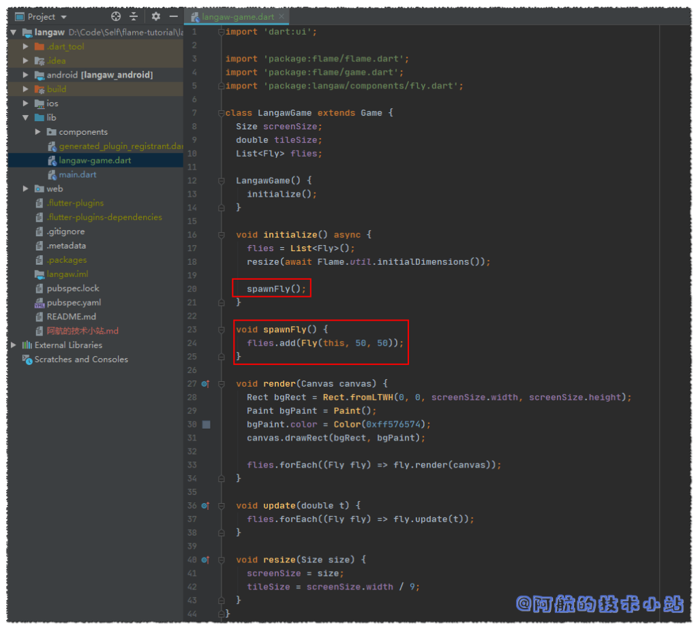
(代码截图: 生成小飞蝇)
是时候看看我们努力的成果了.
🟢运行游戏, 你应该会看到这样的:
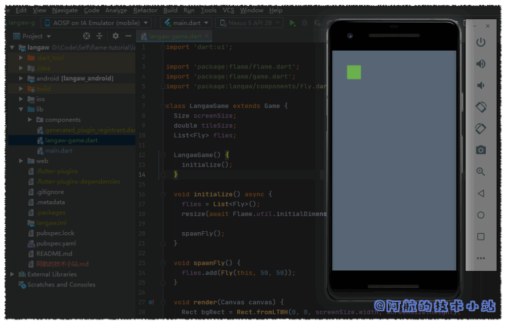
在下一步之前, 我们来升级一下我们的生成小飞蝇的方式…让它在随机位置生成.
我们需要从Dart的math中导入Random类:
import 'dart:math';
然后, 创建另一个类型为Ramdom的实例变量, 命名为rnd:
Random rnd;
在initialize()中, 初始化rnd:
rnd = Random();
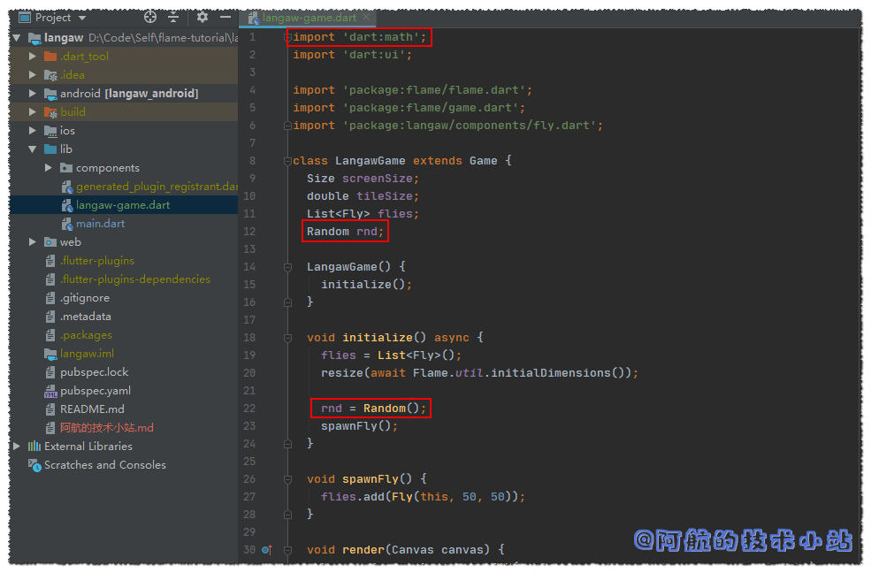
🟡 提示: game类本身的实例也会传入
Fly类. 所以我们稍后可以在那里访问rnd变量.
让我们开始修改小飞蝇生成器, 使X和Y坐标随机. Random包含名为nextDouble的函数, 将返回0(包括)和1(不包括)之间的某个浮点数.
我们要做的是调用此函数, 并将获取的随机数×屏幕宽度-小飞蝇宽度, 因为小飞蝇的坐标点位于其左上角, 并将其分配给初始的x坐标. 我们将对y坐标进行类似的操作, 使用屏幕高度-小飞蝇高度.
小飞蝇是正方形, 所以其宽度和高度相等. 最重要的是, 它们都等于tileSize. 因此, 我们只需从屏幕的宽度或高度减去tileSize就可以获取所需的最大值.
spawnFly()中, 创建新的Fly前添加代码:
double x = rnd.nextDouble() * (screenSize.width - tileSize);
double y = rnd.nextDouble() * (screenSize.height - tileSize);
🔴 注意: 复制粘贴形似的代码时, 很容易一不小心落下其中的变更/差异. 在游戏开发中, 会有很多方案需要复制形似的代码块. 所以, 请确保你花费部分时间来理解并仔细检查你的代码.
接下来, 把新随机生成的x和y值加入files中, 替换之前的:
// 替换
flies.add(Fly(this, 50, 50));
// 为
flies.add(Fly(this, x, y));
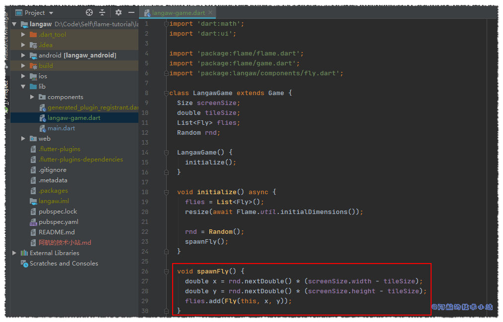
(代码截图: spawnFly())
每次重新运行游戏, 你将会看到"小飞蝇"会出现在随机的位置:
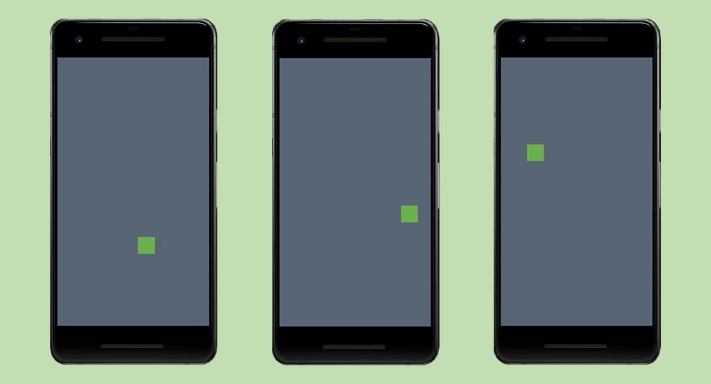
(“小飞蝇"会出现在随机的位置)
处理小飞蝇被击落
完成这部分, 需要处理用户的点击动作👉📱. 先来讨论一下, 玩家点击小飞蝇时会发生什么. “小飞蝇"应该变红并坠落至屏幕底部. 离开屏幕范围后, 销毁它, 释放手机内存.
接收点击动作
这部分在上一章
讲过, 所以这里不跟大家墨迹. 首先在game类中有处理函数. 我们将会处理onTapDown事件, 该事件接收TapDownDetails作为参数. 为此, 我们需要Flutter的gesture手势库. 所以, 进入./lib/langaw-game.dart, 导入:
import 'package:flutter/gestures.dart';
然后在class中, resize()下方添加函数:
void onTapDown(TapDownDetails d) {}
截图(我们的代码文件越来越长咯😝):
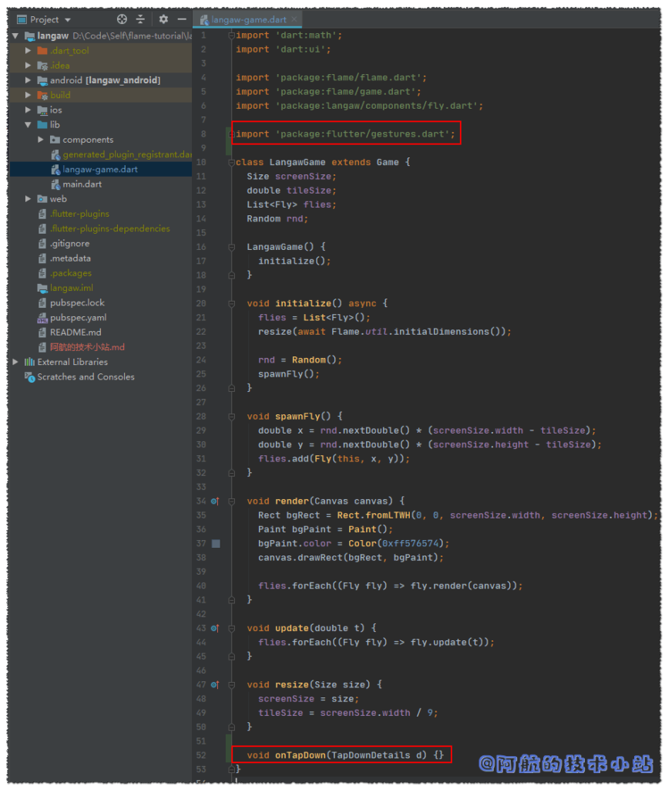
(代码截图: 添加onTapDown函数)
我们回到./lib/main.dart, 同样导入gestures:
import 'package:flutter/gestures.dart';
然后创建一个手势识别器, 将它的onTapDown属性与game类中的onTapDown处理器关联, 并使用Flame提供的addGestureRecognizer进行注册.
TapGestureRecognizer tapper = TapGestureRecognizer();
tapper.onTapDown = game.onTapDown;
flameUtil.addGestureRecognizer(tapper);
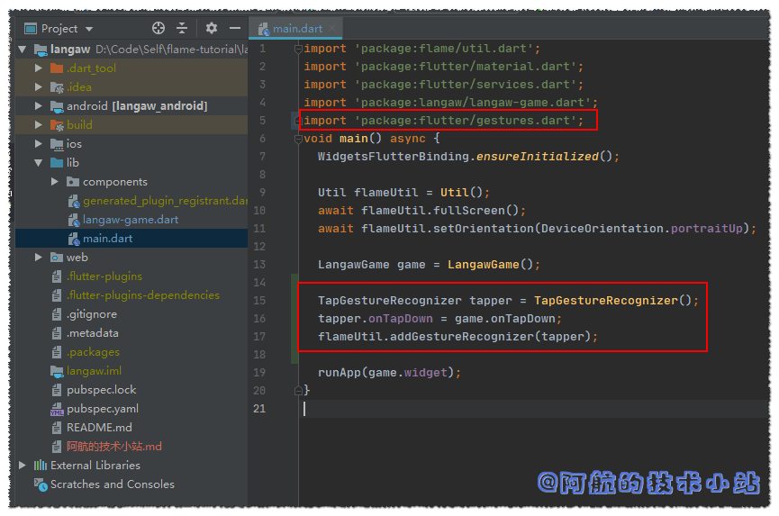
(代码截图: 创建手势识别器)
我们将在多个文件直接切换, 打开./lib/components/fly.dart, 在这里添加一个事件处理器, 仅Fly实例被点击时触发.
我们不需要了解过多细节比如点击的坐标. 我们只需要相信game类, 若此处理器被触发, 证明Fly实例被点击.
在update函数下面添加:
void onTapDown() {}
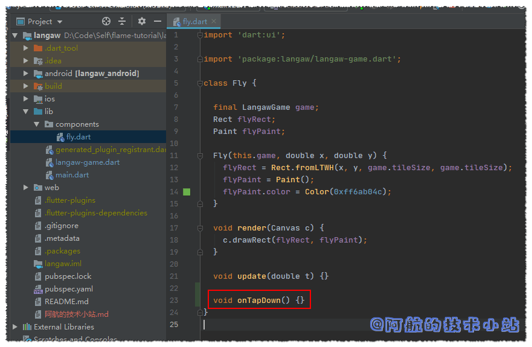
(代码截图: 添加onTapDown)
返回./lib/langaw_game.dart. 在onTapDown处理器中, 我们需要遍历所有的flies并检查点击位置是否在小飞蝇的范围内.
Rect类有一个好用的contains函数. 它接收offset(偏移量)作为参数, 若传递的offset在调用它的Rect的范围内, 返回true. 否则返回false.
这样我们就可以将globalPosition属性传递给fly的Rect的contains(), 使我们知道是否击中了小飞蝇.
在onTapDown()中添加代码块:
flies.forEach((Fly fly) {
if (fly.flyRect.contains(d.globalPosition)) {
fly.onTapDown();
}
});
💡 解析: 上面的代码块通过遍历
files中的Fly实例. 与render()和update()中的逻辑类似, 我们在遍历中传递了一个函数, 使其为flies中的每个Fly运行.
Fly类有一个名为flyRect的实例变量, 该实例变量是一个Rect, 因此有contains函数. 我们使用contains函数来检查传入的TapDownDetails的globalPosition是否在矩形范围内.
若在范围内, 我们就可以确定那个在遍历中的Fly实例被击中. 我们通知这个小飞蝇调用其onTapDown处理器.
这个game类的onTapDown处理器如图所示:
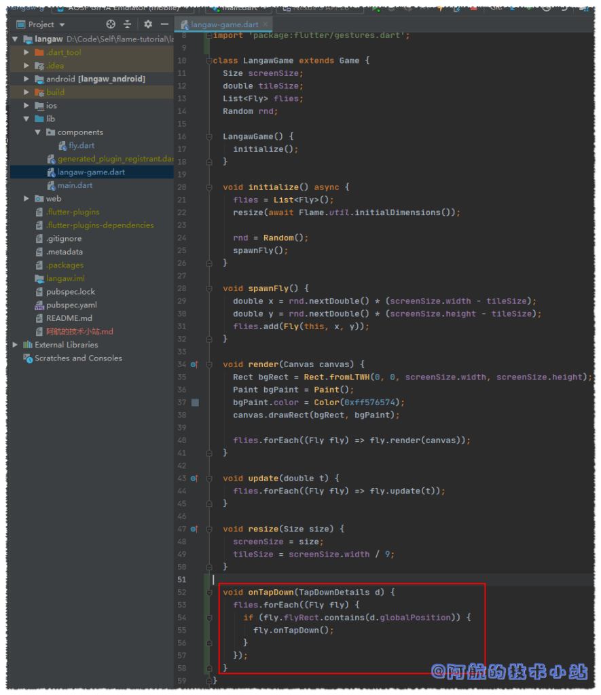
(代码截图: onTapDown处理器)
处理被击中的小飞蝇
打开./lib/components/fly.dart, 我们来处理被击中的小飞蝇.
首先我们来变更它的颜色. render(渲染)小飞蝇时, 我们使用Paint类型的变量, 取名为flyPaint. 它有一个Color的属性. 若没点击小飞蝇, 颜色为苹果色. 如果我们改变这个颜色, 它应该反映下一次调用render的情况(人眼一秒识别60帧几乎是极限).
小飞蝇被击中后, 改为红色. 使用FlatUIColor.com的西瓜色（#ff4757）作为我们的"红色”.
在onTapDown处理器中添加代码块:
flyPaint.color = Color(0xffff4757);
🟢运行游戏, 当你点击"小飞蝇"时, 它应变为红色.
这一部分的代码截图:

(代码截图: fly组件onTapDown处理器)
处理被击落的小飞蝇
当小飞蝇被击中死掉时, 它们应该因为重力而坠落, 而不是停在空中. 要做到这一点, 我们必须使用到我们一直忽略的game loop的另一部分.
update()用于更新游戏中的内容(不包括由玩家操作造成的更改).
目前, fly的update()已经被game loop的update()所调用:
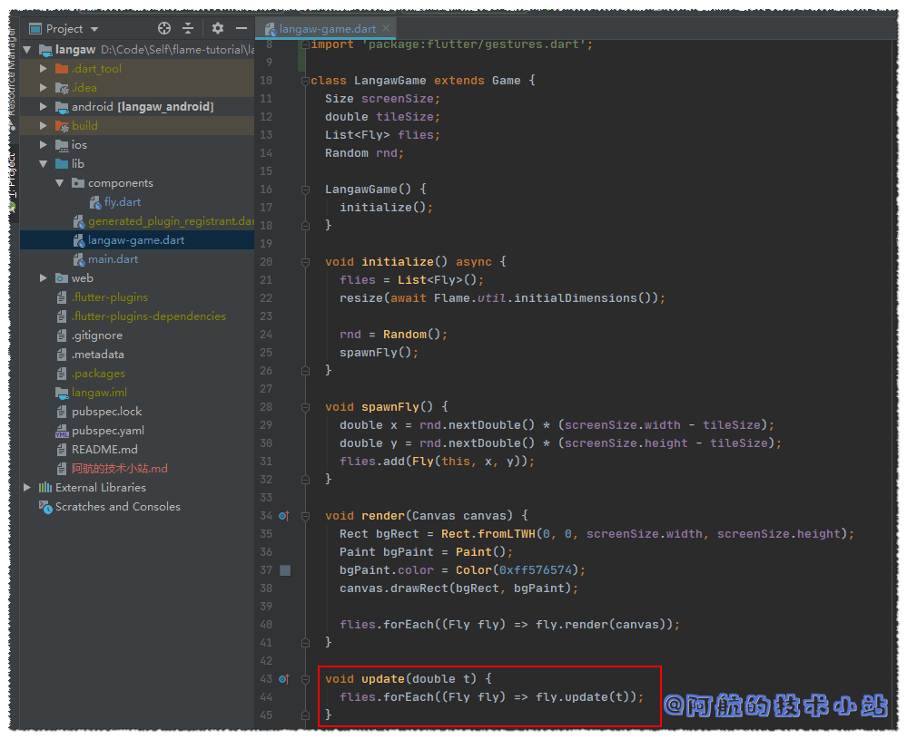
(代码截图: fly的update()被调用)
对小飞蝇进行动画处理, 使其看起来像是在坠落. 这是需要更新的逻辑之一. 但是我们不能把动画放在这里, 因为只有小飞蝇挂掉才会坠落. 我们来定义一个实例变量用于存储此信息.
在./lib/components/fly.dart中添加实例变量:
bool isDead = false;
现在我们需要改动Fly类的update(). 我们检查小飞蝇是否死掉, 如果死掉了, 我们改变它的边界矩形, 在它的top属性中添加一个特定的值, 使其向下移动.
🟡 提示:
Fly的边界矩形实际上是一个不可变的Rect, 因此它的属性是不可变的. 使用final修饰的变量无法变更, 所以我们需要使用Rect的shift以及translate函数重构Rect.
在onTapDown处理器上, 因为小飞蝇被点击后会死掉, 所以翻转isDead的值为true:
isDead = true;
制作下降的动画, 添加以下代码块到update()中:
if (isDead) {
flyRect = flyRect.translate(0, game.tileSize * 12 * t);
}
💡 解析: 每次
update被调用时(约每秒60次), 小飞蝇将检查isDead参数是否为true. 如果为true, 我们通过调用其translation函数构建一个新的Rect并将其分配回flyRect.
对于这些值, 由于小飞蝇是垂直坠落, 所以x为0, 至于y..
这个变量实际上应被称作timeDelta. 但脚手架代码将其命名为t, 所以我们直接使用即可(你也可以按需更改). 从现在开始, 我们将其称为"时间增量"或时间变化.
当我们提到60帧时, 就好像说每帧花费的时间跨度等于16.66666..毫秒. 可以基于此固定的数字进行计算.
世间不是完美的, 事实并非如此😶
运行游戏的设备不仅仅运行游戏, 还运行着操作系统, 甚至还有其他后台运行的APP. 这些APP可能都在做不同的事情. CPU尝试提供所有运行的进程相同的配额, 但是有些需要多一点, 有些需要少一点.
这就是时间增量的用处. 它包含字上次运行update经过的时间, 以秒为单位.
使用此值, 我们可以计算应该发生的移动量. 假设由于某种原因, 游戏正在以每秒1帧的恒定完美速度运行, 因此时间增量的值恰好为1. 如果你打算以每秒10个区块的速度移动对象, 你可以将10倍(乘以区块大小的值)乘以1(时间增量的值)乘以(或减去)要移动对象的尺寸. 这将使你1秒移动10个区块.
现在, 假设游戏以每秒4帧的恒定完美速度运行. 时间增量将始终为0.25. 使用相同的移动速度(10个区块/秒), 我们每帧将对象移动10×区块大小×0.25(等于2.5×区块大小). 假设每秒有4帧, 那么速度依然是10个区块/秒.
将这种逻辑与公式game.tileSize * 12 * t配合使用, 无论时间增量是多少, 我们仍然可以得到每秒12个game.tileSizes的恒定运动值.
🟡 注意: 为了得出12的值, 原作者使用了一个高度复杂的科学计算过程—“想到什么是什么”🤣🤣🤣. 随机选择的这个数字, 经测试后看起来还可以. 你也可以改动这个数字使下降速度变快/慢.
代码截图:
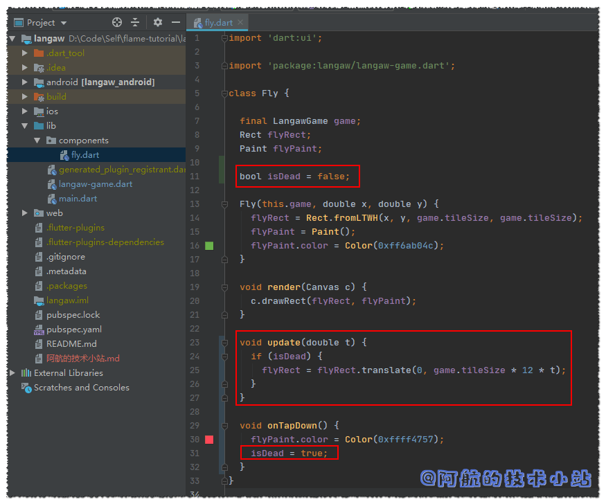
(代码截图: 处理小飞蝇坠落)
🟢运行游戏, 效果:

(运行游戏效果)
更多小飞蝇
只有一只不够刺激. 一个可玩性十足的游戏应该每次在小飞蝇死掉后再出现一个.
在onTapDown处理器中添加:
game.spawnFly();
代码截图:
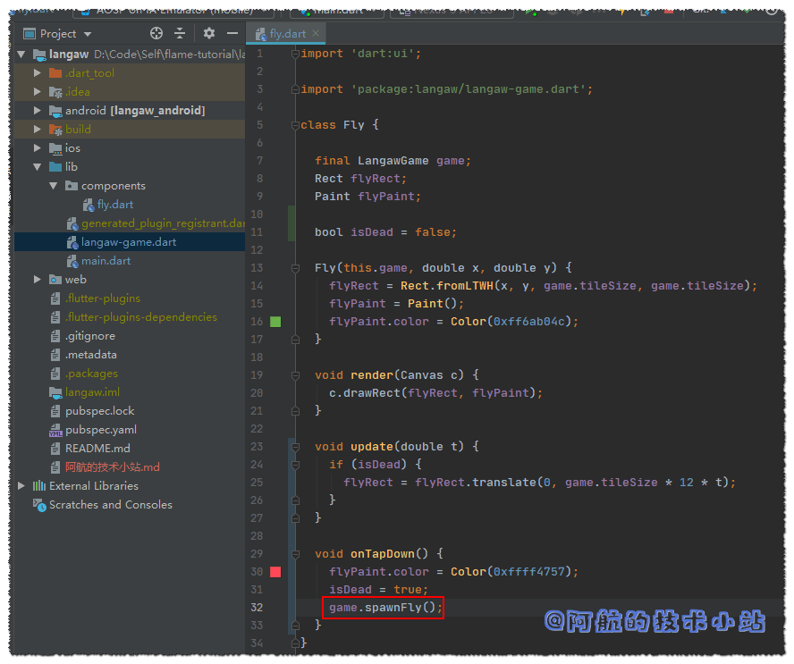
(代码截图: 添加spawnFly)
🟡 注意: 如果你发现此行有报错, 这是因为
spawnFly尝试在遍历时变更list.
问题不大, 我们稍后处理这个. 如果你想练习解决问题, 你可以随时自行修复.
🟢运行游戏, 你应该会发现每次击落后, 又生成了一只小飞蝇:
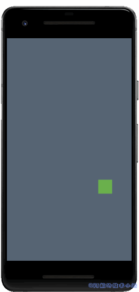
(不断生成的小飞蝇)
但是现在还有一个问题, 超出屏幕范围的下落的小飞蝇没被清理. 不多还好, 一旦小飞蝇过多, 将会出现著名的报错Stack Overflow(内存溢出). 虽然现代的手机都可以自行清理, 但是这不是一个好的代码习惯.
我们来处理, 删除超过屏幕的小飞蝇. 添加实例变量isOffScreen, 代表是否超出屏幕:
bool isOffScreen = false;
在update()内部, 移动小飞蝇后添加:
if (flyRect.top > game.screenSize.height) {
isOffScreen = true;
}
💡 解析: 我们检查此实例的矩形顶部坐标是否超出屏幕高度, 如果是, 将
isOffScreen的值设为true.
🟡 注意: 你也许注意到了这点. 这和和数学有区别, 屏幕的原点
(0,0)位于屏幕的左上方. Y轴方向为向下.
代码截图:

(代码截图: 处理超出屏幕的小飞蝇1)
最终, 我们需要销毁isOffScreen为true的fly实例.
我们可以一行搞定此需求. 通过Dart的List的removeWhere函数. 这个和forEach类似但是它只返回一个boolean. 很幸运, isOffScreen也是一个boolean, 所以我们可以直接使用.
在./lib/langaw-game.dart的update()中添加:
flies.removeWhere((Fly fly) => fly.isOffScreen);
💡 解析: 我们创建一个匿名函数, 使用Fly作为入参. 然后立即返回它的
isOffScreen属性.然后将该匿名函数作为参数传递给
flies列表中的removeWhere函数, 该函数为List中的每个Fly实例运行传递的函数, 若该函数返回true则删除该实例.
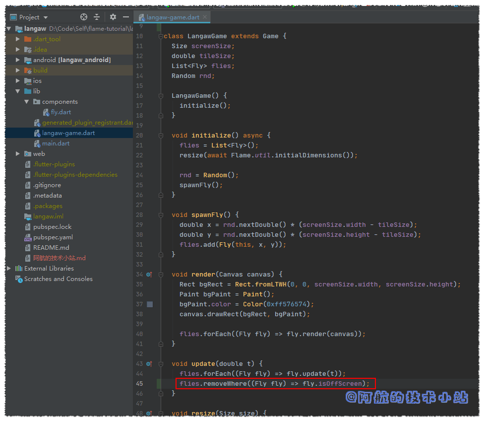
(代码截图: 处理超出屏幕的小飞蝇2)
测试游戏!
是时候看看我们努力的成果了. 运行我们的游戏, 你应该有了一个类似于这样的可玩的游戏:

结语
经过相当长的教程, 我们现在拥有了新的游戏. 这比上一章更有交互性.
通过从零开始创建游戏, game loop的概念应该更加熟悉了. 我们还介绍了游戏循环中的update功能.
我希望你喜欢DIY自己的游戏, 尝试各种不同的颜色和速度, 不要犹豫! 使你的游戏别具一格!
如果你出现了不懂的地方, 不要犹豫, 欢迎在评论区留言! 也欢迎你加入我的Flame交流群(QQ)
下一章将会干什么?
下一章 , 我们将会用图片来表示对象, 并执行更多的动画!
感谢
- 本篇文章参考原作《2D Casual Mobile Game Tutorial – Step by Step with Flame and Flutter (Part 1 of 5)》 .
- flame github仓库地址
- pub.dev 官方网址